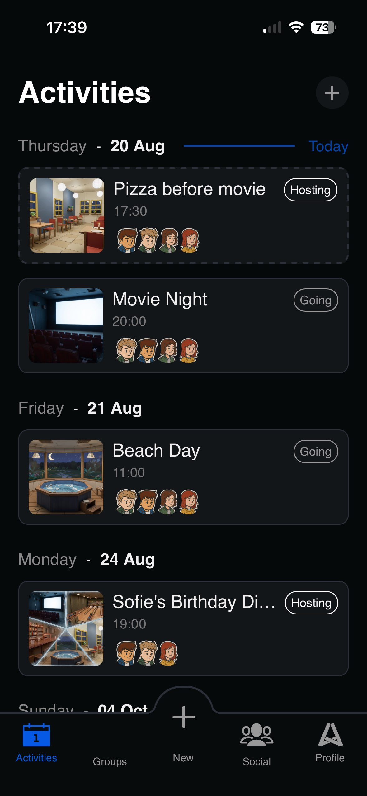
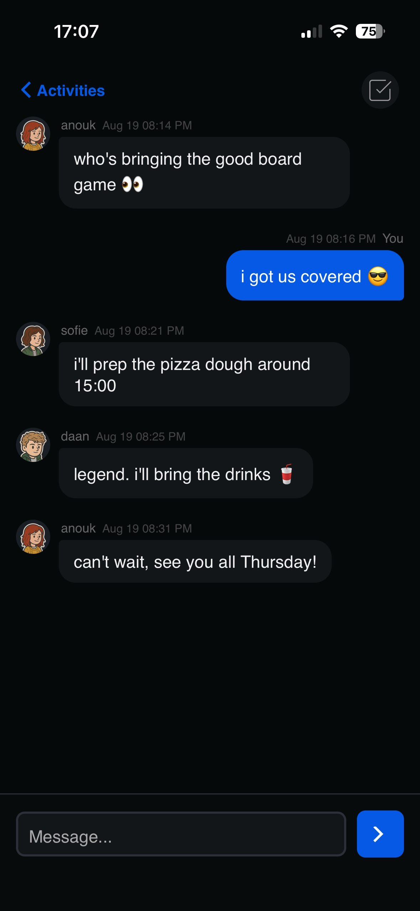
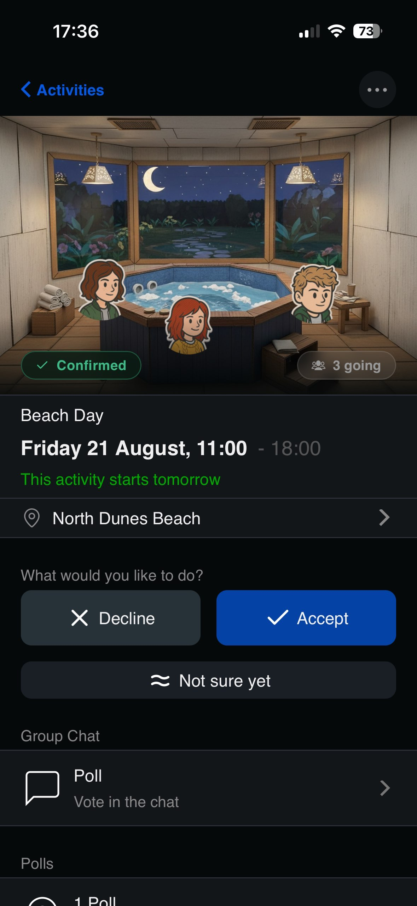

Planium
BetaPlan it together.
A social planner for the part that is actually hard: agreeing on something. Post an activity, pull in the friends you want there, keep them in a group, and settle the rest with a poll and a chat that updates live for everyone at once. It installs to the home screen as a PWA and ships as a native app.
- Activities
- Groups & chat
- Polls
- Friends
- Live notifications
- Built
- Since Jan 2025
- Commits
- 600+
- Stack
- Full stack
- Runs on
- Native app & PWA


